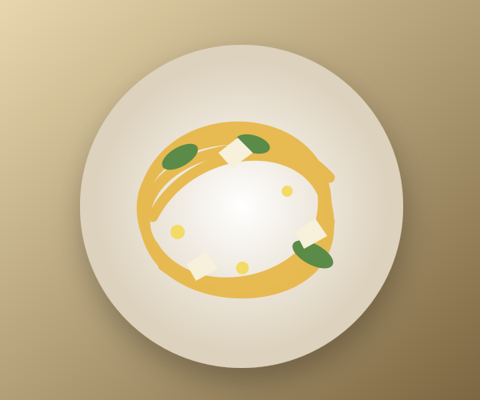

Today · 6:42 PM
Ready when you are
Actions stay quiet until needed; Delete gains destructive emphasis only in its confirmation.

Today · 6:42 PM
Actions stay quiet until needed; Delete gains destructive emphasis only in its confirmation.